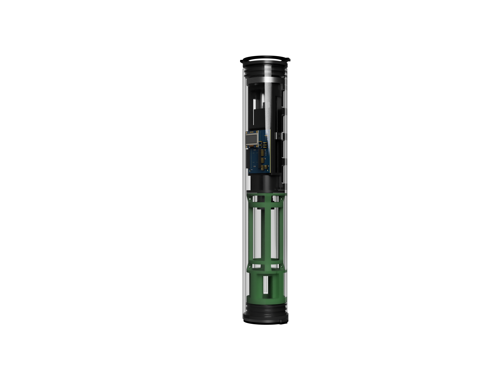

Bouyancy Float Designing
Engineered a custom underwater float system featuring an integrated depth-maintenance logic using bang-bang control.
Bouyancy Float Designing

The Problem
Existing turbine blades in a mid-range gas turbine were operating at temperatures 12% above the material's ideal service range during peak load, leading to accelerated creep and unscheduled maintenance every 1,800 flight hours.
My Role
Lead design engineer responsible for the full CFD simulation workflow, including mesh generation, boundary condition setup, post-processing, and iterating on channel geometry based on results.
Approach
Parametrised 7 internal cooling channel geometries (serpentine, pin-fin, chevron rib) and ran 40+ ANSYS Fluent simulations. Applied design of experiments (DOE) to identify the dominant variables — rib angle and channel aspect ratio — before converging on the final design.
Outcome
The optimised design reduced blade average surface temperature by 18% and extended predicted service life from 1,800 to 2,700 flight hours — a 50% improvement — while remaining within the original manufacturing cost envelope.